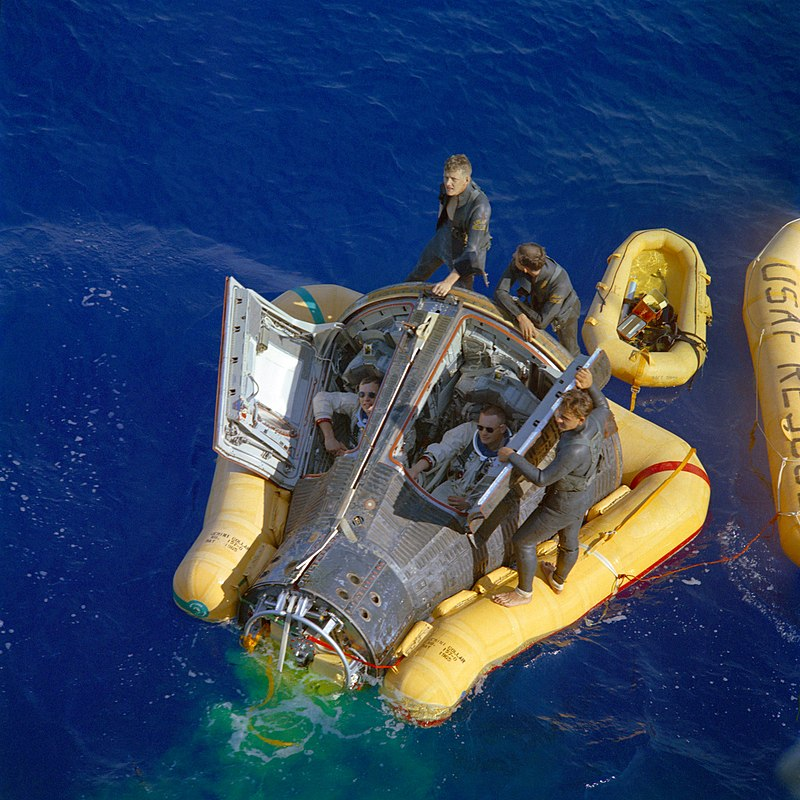
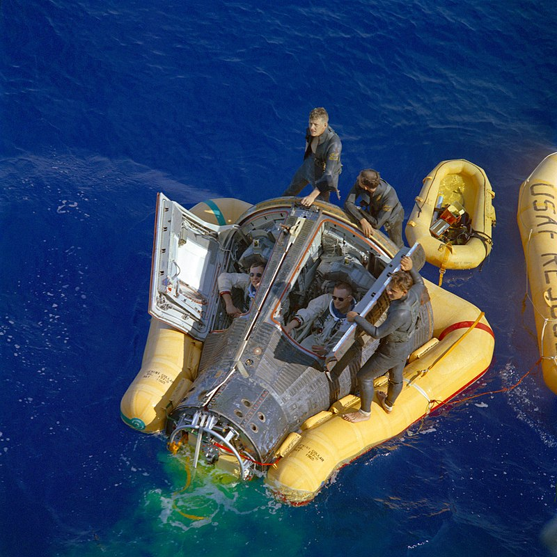
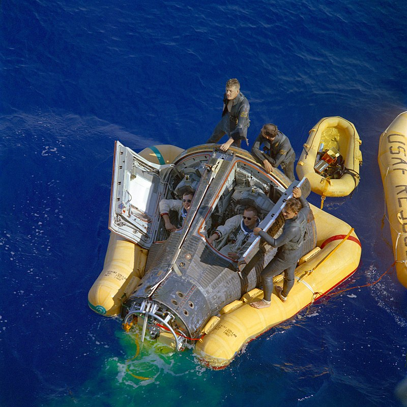

Fue un astronauta estadounidense y el primer ser humano en pisar la Luna. También fue ingeniero aeroespacial, piloto militar, piloto de pruebas y profesor universitario. Cuando puso el pie en nuestro satélite natural el 21 de julio de 1969, pronunció esta célebre frase: "Es un pequeño paso para un hombre, pero un gran salto para la humanidad".
Misiones
Gemini 8
Apollo 11
Gemini 8

Los nombres de los tripulantes de la Gemini 8 se anunciaron el 20 de septiembre de 1965: Armstrong sería piloto comandante y David Scott piloto. Esta misión, que era el sexto vuelo espacial tripulado del programa Gemini de la NASA , se lanzó al espacio el 16 de marzo de 1966. Era la más compleja hasta entonces porque incluía el encuentro y acoplamiento con el vehículo no tripulado Agena y también la segunda actividad extravehicular (EVA) que se había hecho hasta entonces, que debía llevar a cabo Scott. En total, estaba planeado que la misión durara 75 horas, 55 de ellas en órbita. Tras el despegue del Agena a las 10 a.m. EST, el cohete Titan II que transportaba a Armstrong y Scott despegó a las 11:41 a.m. y los puso en una órbita desde la que podrían perseguir al Agena.
El encuentro y primer atraque entre dos naves espaciales se completó con éxito después de seis horas y media en órbita.49 El contacto con los tripulantes fue intermitente debido a la falta de estaciones de seguimiento que cubrieran la totalidad de sus órbitas. Sin comunicación con la Tierra, las naves acopladas comenzaron a rodar y Armstrong intentó corregirlo con el sistema de maniobra orbital de la Gemini. Se desacoplaron siguiendo el consejo que les dio el Centro de Control de la Misión, pero se encontraron con que el giro aumentó dramáticamente hasta el punto de dar una vuelta cada segundo, lo que significaba que el problema estaba en los sistemas de la propia Gemini. Armstrong decidió que lo único que podían hacer era activar el sistema de control de reentrada y apagar el de maniobra orbital. Las normas de la misión dictaban que una vez que se activara el control de reentrada, la nave espacial tendría que regresar a la Tierra a la primera oportunidad y así fue. La Gemini 8 amerizó en el océano Pacífico occidental, unos mil kilómetros al sur de Yokosuka, Japón . Después se sospechó que un cable dañado pudo provocar el atasco de uno de los propulsores en la posición de encendido.
Apollo 11
Después de ser reserva del comandante del Apolo 8, que había orbitado la Luna, el 23 de diciembre de 1968 Deke Slayton le ofreció a Armstrong ser comandante del Apolo 11. En una reunión que no se hizo pública hasta la publicación de la biografía del astronauta en 2005, Slayton le contó a Armstrong que aunque la tripulación planeada era él como comandante, Buzz Aldrin como piloto del módulo lunar y Michael Collins como piloto del módulo de mando, le ofrecía la posibilidad de sustituir a Aldrin por Jim Lovell. Después de pensarlo durante un día, Armstrong le dijo a Slayton que seguiría con Aldrin, con quien no tenía dificultades para trabajar y pensaba que Lovell merecía ser comandante de su propia misión. El piloto del módulo lunar era en la práctica el miembro de menor rango y Armstrong no quería que Lovell, que había comandado la Gemini 12, fuera el tripulante menos importante del Apolo 11.
En una reunión en marzo de 1969 entre Slayton, George Low, Bob Gilruth y Chris Kraft se decidió que Armstrong sería la primera persona en intentar pisar la Luna, decisión que se fundamentó en que los gestores de la NASA lo veían como una persona con poco ego. En una conferencia de prensa que tuvo lugar el 4 de abril de 1969 se explicó que la razón por la que Armstrong sería el primero en descender la tenía el diseño del módulo lunar: la escotilla se abría hacia dentro en el lado derecho y ello dificultaba que el piloto del módulo [Aldrin] saliera primero. Slayton añadió: «En segundo lugar, en base al protocolo, supuse que el comandante debía ser el primer tripulante en salir. Bob Gilruth [director del Centro de Naves Espaciales Tripuladas] aprobó mi decisión».
Vida despues del Apollo
Armstrong anunció poco después de la misión Apolo 11 que no tenía planeado volver a viajar al espacio. Fue nombrado Administrador Asociado Adjunto de aeronáutica en la Oficina de Investigación y Tecnología Avanzada, perteneciente a la Agencia de Proyectos de Investigación Avanzados (ARPA). Sin embargo, permaneció en este puesto solo un año y en 1971 renunció totalmente a ocupar ningún cargo dentro de la NASA .
Aceptó un puesto de profesor en el Departamento de Ingeniería Aeroespacial de la Universidad de Cincinnati, una universidad que eligió entre ofertas de muchas otras, incluida la que era su alma mater, Purdue, porque tenía un pequeño departamento aeroespacial. Esperaba que los miembros de la facultad no se molestaran porque accediera al puesto de profesor teniendo tan solo un título de máster otorgado por la Universidad del Sur de California. Armstrong había comenzado a trabajar en ese máster años atrás mientras estaba destinado en la base Edwards y lo completó después del Apolo 11 presentando un informe sobre varios aspectos de la misión lunar. En la universidad de Cincinnati fue contratado como profesor universitario de ingeniería aeroespacial. Estuvo ocho años dando clases allí, hasta que en 1979 dejó el trabajo sin dar explicaciones de su marcha.
Por otra parte, Neil Armstrong colaboró en la investigación de dos accidentes de vuelos espaciales. La primera fue en 1970, después del incidente del Apolo 13, para la cual creó una detallada cronología del vuelo. Se opuso a la recomendación que hacía el informe para que se rediseñaran los tanques de oxígeno del módulo de servicio, que habían sido la causa de la explosión. En 1986, el presidente Ronald Reagan lo nombró como miembro de la Comisión Rogers, la cual investigó el accidente del transbordador espacial Challenger ocurrido ese año y que había costado la vida a siete astronautas. Como vicepresidente de la misma, Armstrong estuvo al cargo de la parte operacional de la comisión.

 
